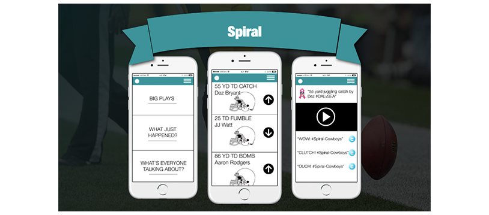
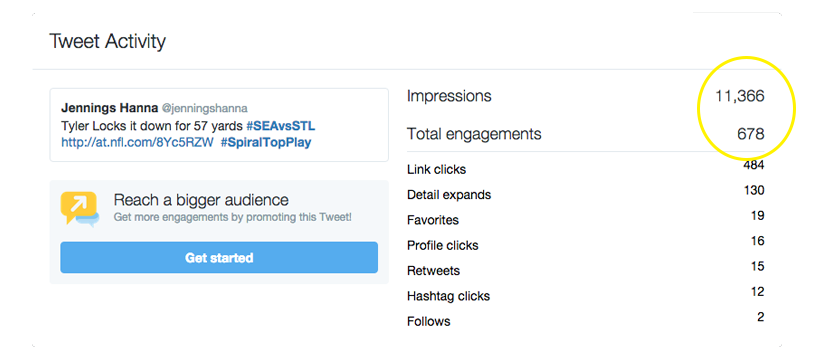

 <!DOCTYPE html>

<html>

<title>Spiral Product at NFL Media, JenningsHanna.com, Jennings Hanna is an Interaction Designer and Content Strategist</title>

<meta name="viewport" content="width=device-width, initial-scale=1">

 <!-- CSS RESET ERIC MEYER
 <link rel="stylesheet" type="text/css" href="assets/reset.css" />
 -->
<link rel="shortcut icon" href="/favicon.ico" type="image/x-icon">
<link rel="icon" href="/favicon.ico" type="image/x-icon">
 
 <!-- Skeleton CSS -->
 <link rel="stylesheet" href="assets/skeleton/normalize.css">
 <link rel="stylesheet" href="assets/skeleton/skeleton.css">
 
 <!-- MY CSS -->
 <link rel="stylesheet" type="text/css" href="assets/style.css" />
 
 <!-- GOOGLE WEB FONT - 'Open Sans' Normal 400 -->
 <link href='http://fonts.googleapis.com/css?family=Open+Sans' rel='stylesheet' type='text/css'>
 
  <!-- FONT AWESOME -->
 <link rel="stylesheet" href="https://maxcdn.bootstrapcdn.com/font-awesome/4.4.0/css/font-awesome.min.css">

</html>

<body >
	<div class="container top">
		<div id="pencil"></div>
		<div class="row">
			<div class="twelve columns">
		<p class="color"><a href="index.html"></a>Super! I hope you enjoy my case study about my experience designing the <span class="name">NFL Spiral Product.</span> I was the senior product designer on the team which included the social team, the features team, the product team and the lead co-designer, the director of content and video.</p>
				
				<p class="color">I was brought on to the team in September of 2014 to help develop many things including new products for the digital content delivery. We asked ourselves the question: How might we best socialize the Touchdown and other big moments in the game. We segmented our users through four lenses. Those being fans of the game, fans of a team, fans of a player or players, and fans that only watch the Super Bowl.</p>
				<p class="color">To design this product for all of these user types we utilized third party industry analysis and I also did guerrilla research. The industry analysis told us what was working for the NFL and other large sports companies and how we compared. As well as making some recommendations, one of them was that Twitter had consistently shown the most reach when it came to digital content for large sports companies.</p>
				
				<p class="color">As I mentioned I also did guerrilla research through which we learned that people wanted to participate more, especially by sharing info about the big moments in the game. We found, to our surprise that they were doing that in closed networks, primarily through texting or social networks. In short, our assumption that users wanted to share big moments was correct but instead of providing them with a tool to do it, we needed to provide them with an extension of an existing tool. We created user types around how we thought people would use our product shown here:</p>
				
				<p class="color">Spiral is a extension of NFL video that allows user to share videos to their networks on social media. Data is collected around reach and then videos are ranked by the amount they are shared and viewed. The top video are then shared on the Network. Here is the early screen prototypes I created to share in the pitch deck:</p>
				
				<p class="color">The product is now live at NFL.com and you can share your favorite big moments at <a href="http://spiral.nfl.com" target="_blank">http://spiral.nfl.com</a>. Here are some screen captures from it's first week:</p>
				
				<p class="color">When the product was launched in September of 2015, I spent the first football Sunday with the team of interns and editors that publish the content to help guide them. It was fun to watch the media team propel what was once just a loose idea into a real world product. The first tweet I sent through spriral has had more reach than any other tweet I ever sent.</p>
				
				<p class="color">Whereas that is a big win for a product designer, I know that spiral still has a long way to go and continue to help the team support it by analyzing their data and providing feedback around product integration and growth. We are also looking into ways to make this a type of installation at the Super Bowl.</p>
			</div>
		</div>
		<div class="row">
			<div id="pencil2"></div>
		</div>
		<div class="row portfolio-cards">
			<div class="four columns">
				<div class="card cornell">
					<p class="color"><a href="cornell.html">Meyer Cancer Center NYC</a></p>
				</div>
			</div>
			<div class="four columns">
				<div class="card deja">
					<p class="color"><a href="deja.html">Send yourself postcards in the future</a></p>
				</div>
			</div>
			<div class="four columns">
				<div class="card super-bowl">
					<p class="color"><a href="super-bowl.html">Super Bowl Bracket</a></p>
				</div>
			</div>
		</div>
	</div>
	
<script src="https://ajax.googleapis.com/ajax/libs/jquery/1.11.1/jquery.min.js"></script>
<!-- <script src="assets/js/jquery.animate-colors-min.js"></script> -->
<script src="//cdn.jsdelivr.net/jquery.color-animation/1/mainfile"></script>
<script src="assets/js/spectrum.js"></script>
<script src="assets/js/imgswap.js"></script>
<script src="assets/js/analytics.js"></script>

</body>